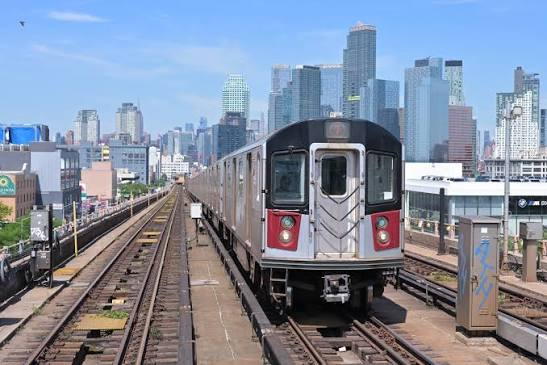
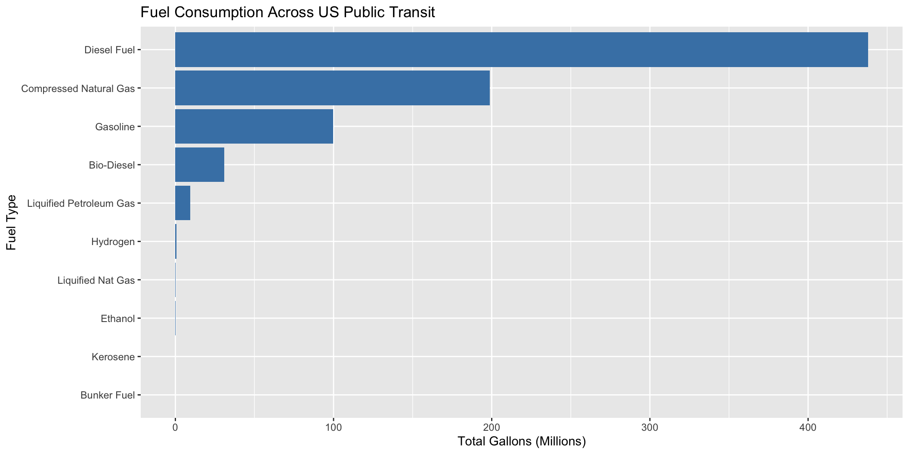
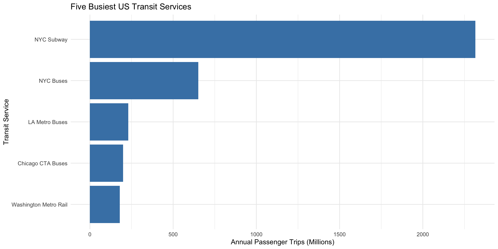
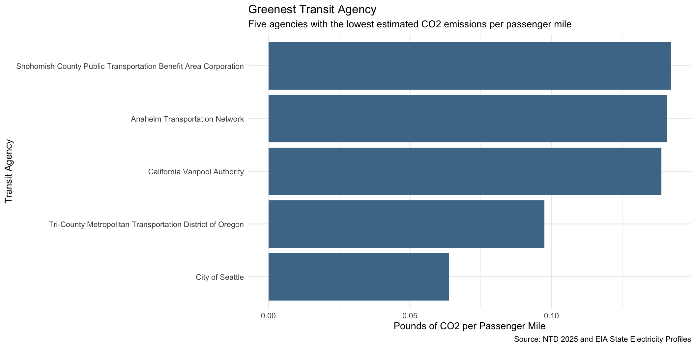
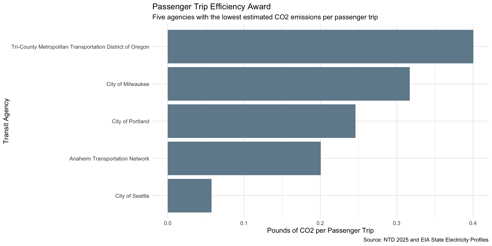

state CO2_MWh primary_source
1 West Virginia 1912 Coal
2 Kentucky 1744 Coal
3 Wyoming 1724 Coal
4 Missouri 1456 Coal
5 Hawaii 1426 PetroleumMini-Project 02: The Green Transit Report
Evaluating Environmental Performance Across US Transit Systems

Introduction
Why Should We Care About Green Transit?
In July 2025, New York City subways averaged approximately 3.86 million rides on weekdays, showing how heavily we rely on public transportation, whether it’s buses, trains, or other transit systems, to get to work, school, or any other destination. However, public transportation comes with its own challenges, such as how crowded and busy it can get, especially during rush hour, and how there always seem to be delays when we least expect them. You may have heard in the past that taking public transportation is better for the environment than everyone driving their own individual car. But have you ever wondered if the public transportation systems we rely on are actually environmentally friendly?
To better understand how environmentally friendly public transportation systems are, we looked at three different datasets covering transit agencies across the United States. These datasets allow us to examine electricity production, fuel consumption, and passenger transportation. A key distinction is that producing less CO₂ doesn’t necessarily tell us the whole story. There are other factors to consider, such as how many passenger trips an agency provides and how far those passengers travel. By considering both total emissions and efficiency, we can better understand the environmental performance of transit agencies and determine which ones deserve recognition.
Data Acquisition and Preparation
Understanding the Transit Data
The three datasets we explored were the EIA State Electricity Profiles, NTD Energy Consumption, and NTD Transit Service. Each dataset had a different purpose. The EIA State Electricity Profiles helped us understand how much CO₂ is produced from electricity generation in different states. The NTD Energy Consumption dataset showed us how much fuel and electricity transit agencies use, while the NTD Transit Service dataset provided information on how many passenger trips each agency had and how far passengers traveled.
Before we could start our analysis, we first had to clean and prepare the datasets. This involved importing them into RStudio, reviewing the data, and ensuring the agency IDs and transit mode codes matched correctly. We also had to deal with some missing information, since not every agency had all the data we needed. Once everything was cleaned and prepared, we could move on to exploring the data and eventually combining the datasets to calculate emissions and compare transit agencies.
Exploratory Analysis
What Can the Transit Data Tell Us?
Before moving on to our main analysis, we first wanted to get a better understanding of the three datasets. To do this, we explored eight questions that examined how much CO₂ is produced by electricity in different states, how much fuel transit agencies use, and how many passengers rely on these services. This helped us better understand the information we were working with before comparing the environmental performance of transit agencies.
Part 1: State Electricity Profiles
Question A2: Which five states have the dirtiest electricity mix?
Question A3: Average CO2 Emissions in the United States
Across the United States, the weighted average amount of CO2 produced for every megawatt-hour of electricity generated is approximately 784.9 pounds of CO2.
Question A5: Comparing New York and Texas Electricity
When comparing New York to Texas, we found that New York produces less CO2 per megawatt-hour of electricity than Texas. Texas produces approximately 1.53 times as much CO2 per megawatt-hour as New York.
Part 2: Transit Energy Consumption
Question B1: Five Transit Agencies with the Highest Fuel Consumption
| Five Transit Agencies with the Highest Fuel Consumption | |
| Transit Agency | Total Gallons |
|---|---|
| New Jersey Transit Corporation | 41,721,414 |
| MTA New York City Transit | 40,816,461 |
| Los Angeles County Metropolitan Transportation Authority | 31,416,293 |
| Northeast Illinois Regional Commuter Railroad Corporation | 26,829,691 |
| Massachusetts Bay Transportation Authority | 23,452,535 |
Fuel Consumption Breakdown by Type
| Fuel Consumption Breakdown by Agency | ||
| Transit Agency | Fuel Type | Gallons Used |
|---|---|---|
| New Jersey Transit Corporation | Compressed Natural Gas | 1,521,492 |
| New Jersey Transit Corporation | Diesel Fuel | 38,144,027 |
| New Jersey Transit Corporation | Gasoline | 2,055,895 |
| MTA New York City Transit | Compressed Natural Gas | 6,328,381 |
| MTA New York City Transit | Diesel Fuel | 30,217,934 |
| MTA New York City Transit | Gasoline | 4,270,146 |
| Los Angeles County Metropolitan Transportation Authority | Compressed Natural Gas | 30,410,141 |
| Los Angeles County Metropolitan Transportation Authority | Ethanol | 11,342 |
| Los Angeles County Metropolitan Transportation Authority | Gasoline | 994,810 |
| Northeast Illinois Regional Commuter Railroad Corporation | Diesel Fuel | 26,829,691 |
| Massachusetts Bay Transportation Authority | Compressed Natural Gas | 1,534,123 |
| Massachusetts Bay Transportation Authority | Diesel Fuel | 20,627,960 |
| Massachusetts Bay Transportation Authority | Gasoline | 1,290,452 |
Question B2: Fuel Consumption Across US Public Transit

Part 3: Transit Service
Question C1: Five Transit Services with the Most Passenger Trips

Question C2: Average MTA New York City Transit Trip Length
When looking at MTA New York City Transit, we found that the average passenger trip is approximately 3.18 miles.
Question C3: NYC Transit Service with the Longest Average Trip
Out of the NYC transit services we compared, Metro-North Railroad had the longest average passenger trip at approximately 24.3 miles.
Final Insights and Deliverable
Measuring Environmental Performance
To better understand how environmentally friendly transit agencies are, we looked at both their total CO₂ emissions and the number of passengers they serve. We estimated emissions by looking at the fuel and electricity each agency used. However, total emissions alone don’t tell the whole story, since some agencies serve more passengers or offer longer trips than others. That’s why we also looked at emissions per passenger trip and passenger mile, which helped us make a better comparison between transit agencies.
Data Analysis
Task 5: Calculating Total Emissions
In order to combine the three data sets, we first needed to match the transit agencies using their agency IDs and transportation modes. Once we had that information together, we used the state electricity data to estimate how much CO₂ was produced from electricity use, along with the fuel consumption data to estimate emissions from fuel. We then added both estimates together to calculate the total CO₂ emissions for each transit service. One issue we came across was that some records had missing information or didn’t match between data sets, meaning we couldn’t calculate emissions for every service.
NoteView the Detailed Emissions Calculation Process
Preparing the Data for Integration
Matching Transit Modes and Agency IDs
Checking Agency and Mode Matches
Checking for Multiple Service Records
Combining Transit Service Records
Joining the Three Datasets
Completing Total CO2 Emissions
Task 6: Emissions per Passenger
Looking at total CO2 emissions alone doesn’t tell the whole story, particularly when you’ve got some agencies that serve a lot more passengers or cover a lot more distance than others. Take NYC as an example. A person traveling from Queens to the Bronx is going to have a longer commute than someone traveling within Queens. That’s why we also wanted to look at emissions per passenger trip and emissions per passenger mile. They sound the same but they’re very different. A passenger trip is simply the number of times someone boards a vehicle. A passenger mile is the number of miles travelled by a passenger. One possible limitation with the trip ride is that a person transferring from one train to another could be counted as multiple boardings even though they’re only making one journey. Looking at both of those metrics gives us a better sense of how passenger activity and passenger miles impact our comparison.
Task 7: Identifying Environmentally Responsible Transit Agencies
For our analysis, we decided to have two awards: Greenest Transit Agency and Most Efficient Passenger Boarding. At first, these awards might sound like they’re measuring the same thing, but there’s actually a difference. The Greenest Transit Agency award looks at CO₂ emissions per passenger mile, while the Most Efficient Passenger Boarding award looks at emissions per passenger trip. We wanted to include both because the number of times passengers board a transit service doesn’t necessarily tell us how far they’re traveling. To qualify for either award, agencies needed at least one million passenger trips and one million passenger miles, along with available emissions estimates. We then selected the agency with the lowest emissions for each measurement.
Visualizing the Environmental Awards
Which Transit Agencies Are Leading the Way?
After looking at the total CO₂ emissions and passenger activity, we wanted to see which transit agencies stood out. For this, we decided to use two awards: Greenest Transit Agency and Most Efficient Passenger Boarding. Although these awards might sound similar, they look at two different things. One considers how far passengers travel, while the other looks at how many times passengers board. We chose both because the number of passenger trips doesn’t necessarily tell us the distance people are traveling, and we wanted to consider both when comparing transit agencies. To qualify, agencies needed at least one million passenger trips and one million passenger miles, along with available emissions estimates.
Award 1: Greenest Transit Agency
For the Greenest Transit Agency award, the agency that produced the lowest estimated CO₂ emissions per passenger mile was the City of Seattle. Seattle came in first with approximately 0.064 pounds of CO₂ per passenger mile, compared to the median of 1.07 pounds among eligible agencies. This means that, based on the distance passengers traveled, Seattle’s reported service had one of the lowest estimated emissions in our analysis.

Award 2: Passenger Trip Efficiency Award
Our second award, Most Efficient Passenger Boarding, focused on the amount of CO₂ produced per passenger boarding rather than the distance traveled. The city of Seattle also came in first for this award, with approximately 0.0575 pounds of CO₂ per boarding, compared to the median of 5.92 pounds among eligible agencies. Even though this award measures something different from the first, Seattle still had the lowest estimated emissions among the agencies that qualified.

Comparing Award Winners with Other Agencies
When comparing Seattle’s performance with the other transit agencies shown in the bar charts, we can see that Seattle had the lowest estimated CO₂ emissions in both award categories. For the Greenest Transit Agency award, we looked at the five agencies with the lowest emissions per passenger mile, which included agencies in Oregon, California, Anaheim, and Snohomish County. Although all five performed well compared to other eligible agencies, Seattle still ranked the lowest. For the second award, Most Efficient Passenger Boarding, Seattle once again came in first among the five agencies with the lowest emissions per boarding. However, this time the rankings included Portland and Milwaukee, showing that the agencies performing well can change depending on whether we look at passenger trips or passenger miles. A possible limitation when comparing these agencies is that they serve different populations and areas. Some may operate in larger cities, while others serve smaller communities or suburban areas. These differences, along with how many passengers use each service and how far they travel, can affect the results. Because of this, the rankings don’t necessarily mean that one city’s entire public transportation system is more environmentally friendly than another’s.
Checking Transit Mode Matching
Checking the Combined Transit Data
What Do These Results Tell Us?
Looking at the results from both awards, we can see that the way we measure CO₂ emissions can make a difference when comparing transit agencies. Even though Seattle came in first for both awards, some of the other agencies changed depending on whether we looked at emissions per passenger trip or passenger mile. This shows why we wanted to consider both measurements instead of just looking at total emissions. However, these results don’t necessarily mean that Seattle’s entire public transportation system is the most environmentally friendly, since our findings are based on the transit services and information available in our datasets.
Limitations of Our Analysis
There were a few issues we encountered with the project in terms of getting the Excel data imported and sorted in RStudio. We also had to ensure that the data across the three data sets matched up correctly, and in some cases this wasn’t possible as there were records that were missing information. We estimated CO2 emissions based on fuel consumption and state electricity data rather than measuring CO2 directly. Given that electricity generation varies from state to state, the emissions estimates may not necessarily be an accurate reflection of the environmental impact of each transit agency.
Final Takeaways
Going back to our original question, are the public transportation systems we rely on actually environmentally friendly? Based on the data we looked at, we found that some transit agencies had lower estimated CO₂ emissions per passenger trip and passenger mile than others. However, we can’t necessarily say that all public transportation is environmentally friendly, since we didn’t compare these results with emissions from individual car travel. What we did learn is that looking at total emissions alone isn’t enough. We also need to consider how many passengers use these services and how far they travel when comparing the environmental performance of transit agencies.
NoteAI Usage Statement
I used Claude to help troubleshoot errors, especially when working with the Excel data sets. I also used it to help check calculations, brainstorm ideas, and organize the overall project, like help with the website design, including adding images, choosing colors, and organizing how the information would be presented.
This work ©2025 by Ashliz1 was initially prepared as a Mini-Project for STA 9750 at Baruch College. More details about this course can be found at the course site and instructions for this assignment can be found at MP #02